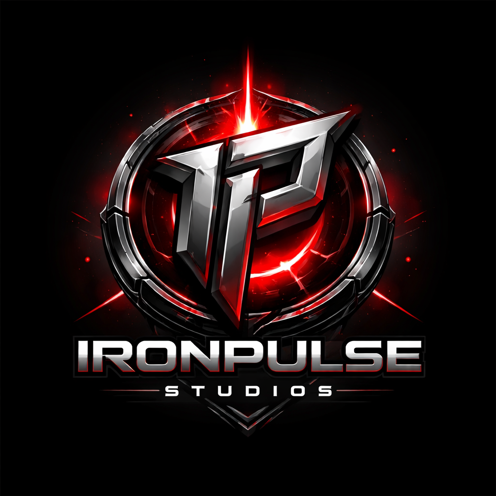

Build your factory. Grow your empire.
Create, upgrade and automate your factory to become the ultimate tycoon.

Create, upgrade and automate your factory to become the ultimate tycoon.
Factory Tycoon X is a factory-building simulation game focused on automation, strategy, and progression. Players start with small production setups and gradually expand into large-scale industrial systems. The goal is to design efficient layouts, optimize production chains, and manage resources to maximize output and profits. As you progress, new machines, upgrades, and technologies become available. Planning and efficiency are key — every decision impacts your growth. The game is currently under development, with new features and improvements being added over time.